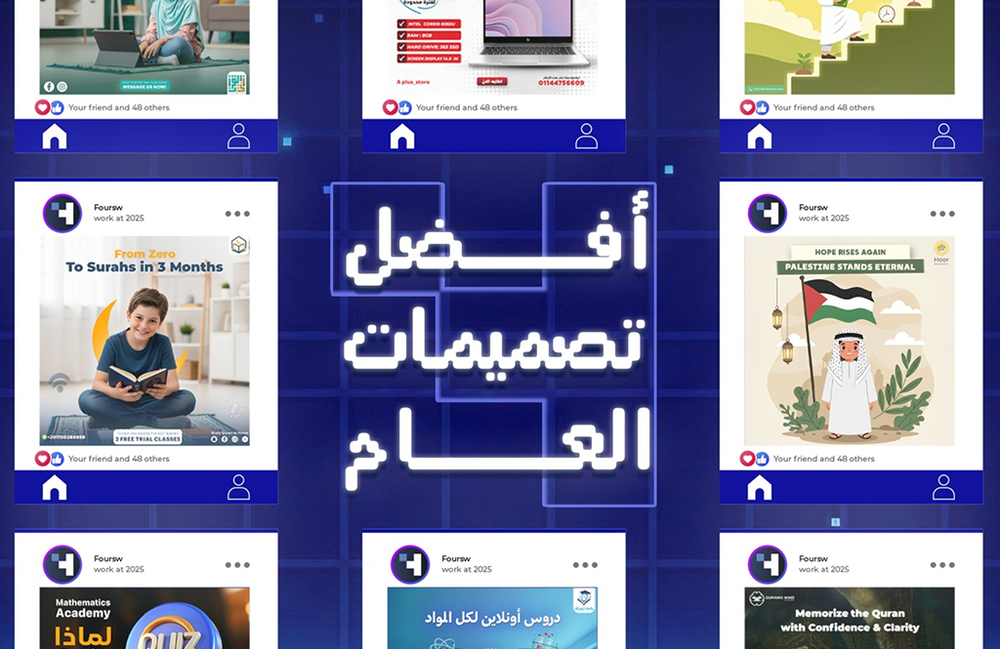
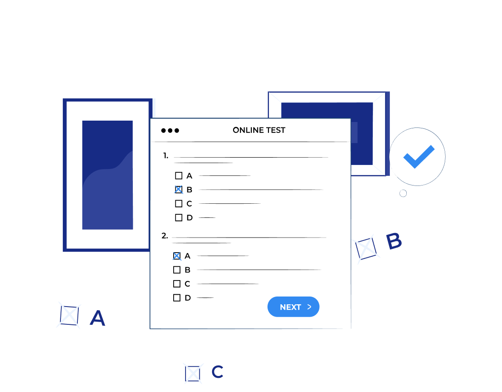

[لا_نعمل_على_جزء_-_إحنا_نبني_الصورة_كاملة]
حلول رقمية متكاملة
من أول [فكرة] لحد ظهورك في
[البحث]
[أفضل_ما_نقدم]
[Logo]
[Design]
[Coding]
[Seo]
[Content]
[Marketing]
function
fullDigitalSolution() {
return
message;
}
async function
yourGrowth() {
}
function
digitalSuccess() {
}
function
buildImpact() {
}
مشاريع رقمية بنتائج قابلة للقياس
شغل اتعمل… ونتايجه باينة
[01_أكاديمية_كيان]
منصة تعليمية متكاملة تتيح للطلاب حضور المحاضرات التفاعلية، أداء الاختبارات التقيمية ومتابعة تقارير الأداء بشكل فوري. تم بناء الهيكل البرمجي ليكون خفيفاً وسريعاً بما يتوافق مع آلاف الزيارات اليومية.

إضافات وحلول برمجية جاهزة لتوسيع أعمالك بسهولة
[Quizzes_Plugin]
إضافة متكاملة لأي موقع تعليمي لتمكين الاختبارات التفاعلية والتقييمات الذكية المباشرة لطلابك.
- ■دعم أكثر من منصة اختبارات بنفس الوقت
- ■تخصيص شكل الامتحان حسب هويتك الخاصة
- ■ربط وتصنيف الاختبارات بالمستويات الدراسية
- ■توحيد حساب الطالب (تسجيل الدخول الموحد)

تجارب من سبقك للنجاح
تجارب حقيقية من عملاء اشتغلنا معاهم
هدفنا إننا نعرض قصص حقيقية لناس قبلِك مرّوا بنفس التحديات… علشان تتأكد إن اللي بنقدّمه مش وعود تسويقية ولا وهم تجاري، لكن شغل حقيقي ونتايجه واضحة.الخدمات اللي فعليًا بتفرّق في شغلك
ركزنا هنا على أهم الخدمات اللي أغلب عملائنا احتاجوها فعلًا… لو شغلك محتاج أكتر، بنبني الحل على مقاسك.


مش مجرد تنفيذ… كنا جزءًا من الرحلة
نعمل بأيدينا، نفكر بعقل عملائنا، ونلتزم بتحقيق أفضل النتائج الرقمية الممكنة بكل شغف واحترافية.